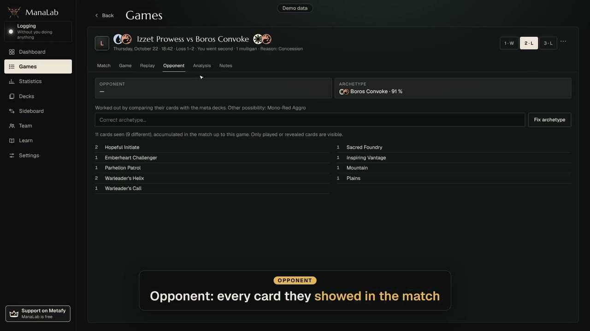
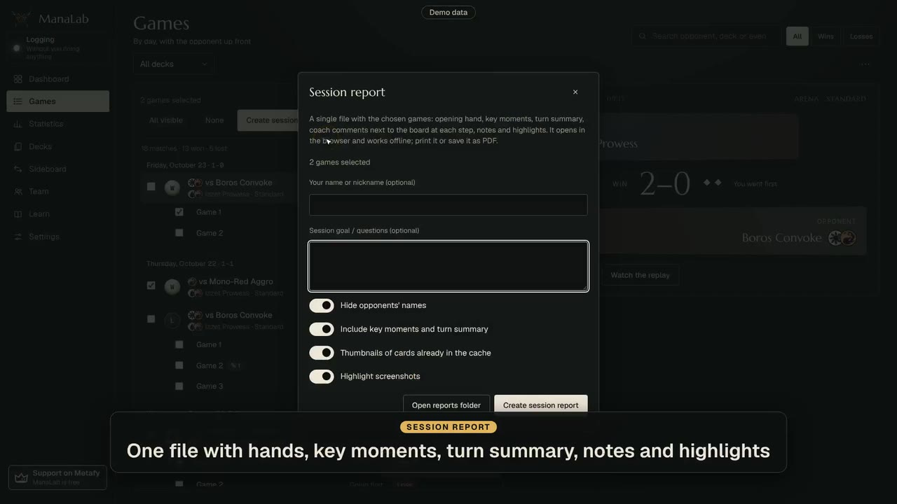

Guida di ManaLab
Cosa fa ogni parte dell'app e come usarla, in Arena e Magic Online. Focus sulle funzioni principali e sul coach IA.
Cos'è ManaLab
ManaLab salva sul tuo PC ogni partita che giochi su MTG Arena e Magic Online (MTGO) e ti mostra cosa funziona: le tue percentuali di vittoria per mazzo, per avversario e per matchup, i tuoi mulligan, i tuoi errori e i cambi di sideboard.
L'app è gratuita. L'unica parte a pagamento è l'analisi IA delle sconfitte: 6 $ al mese, con una prova gratuita.
Primi passi
- Scarica la versione portable (ZIP), estraila e apri ManaLab. Non serve installazione. Per aggiornare in seguito, estrai la nuova versione sopra la vecchia cartella: i tuoi dati restano.
- In Arena vai su Opzioni › Account e attiva «Log dettagliati (supporto plug-in)» (Detailed Logs (Plugin Support)). Poi riavvia Arena. Senza questo ManaLab non può leggere le tue partite di Arena. Magic Online non richiede alcuna impostazione.
- Finché non hai nessuna partita, il Pannello mostra «Prepara il tavolo», con i passaggi che mancano e ciò che salverà ogni partita. Con «Nascondi» lo togli per sempre. Puoi rivedere la guida introduttiva in Impostazioni › Dati e info, con «Vedi la guida introduttiva».
- ManaLab inizia a registrare da solo all'apertura (puoi cambiarlo in Impostazioni › Giochi). Da quel momento ogni partita, di Arena e di Magic Online, viene salvata da sola. Il riquadro sotto il nome ManaLab nella barra laterale indica «In registrazione».
- Gioca in finestra o in finestra senza bordi: l'overlay non si vede a schermo intero esclusivo.
Requisiti: Windows 10 o 11 e Arena, Magic Online o entrambi.
Magic Online
ManaLab registra MTGO come Arena e non c'è nulla da configurare: né «Log dettagliati (supporto plug-in)» né impostazioni. Con ManaLab in registrazione, apri Magic Online e ManaLab lo riconosce da solo. Lo stato di Magic Online nella riga in alto del Pannello indica «Non rilevato» finché non trova il gioco, poi segue le tue partite come quello di Arena.
Registra tutti i formati: le tue mani iniziali e i mulligan, se hai giocato per primo o per secondo, il tuo mazzo, le carte mostrate dall'avversario, i punti vita, il replay e la cronologia. Il tuo mazzo prende il nome con cui l'hai salvato in Magic Online se la lista coincide esattamente, altrimenti dai suoi colori; un nome che scrivi tu in Mazzi non viene mai sostituito.
- Overlay: le carte che restano nel tuo mazzo e quelle mostrate dall'avversario, sopra Magic Online (vedi Overlay).
- Momenti salienti: «Cattura momento» funziona anche in Magic Online (vedi Screenshot e momenti salienti). ManaLab non fa screenshot da solo.
- Importare: in Partite premi «⋯» › «Importa partite», scegli «Log di Arena o Magic Online» e seleziona un file
mtgo.logper recuperare partite giocate con ManaLab chiuso. Contano come tue, e quelle che hai già non vengono duplicate. - Posizione del log: Impostazioni › Giochi, nel gruppo Magic Online, «File mtgo.log». Lascialo su «Predefinito» a meno che Magic Online salvi il suo log in un'altra cartella.
Cosa cambia in MTGO
- Fasi e carte tappate vengono dedotte. Magic Online non le invia, quindi ManaLab le deduce dal solo log. Nel replay, tutto ciò che è dedotto è segnato con ≈, perché potrebbe non essere esatto.
- Pedine ed emblemi (per esempio Tesoro o Sangue) compaiono solo nel replay. Non sono elencati nelle carte dell'avversario, nelle tue liste né nell'overlay.
- L'overlay può mostrare meno che in Arena quando il log non contiene lo stato del tavolo.
- Il sideboard: Magic Online non dice con quale mazzo giochi le partite 2 e 3 finché non iniziano, quindi ManaLab te lo chiede (sezione successiva).
Altro sul sito: Tracker per Magic Online: cosa salva ManaLab e come funziona (in inglese).
Sideboard in Magic Online
Dopo una partita, il log di Magic Online ripete la tua lista originale, anche se hai fatto il sideboard. La lista vera arriva solo quando inizia la partita successiva. Per questo, quando inizia il sideboard, compare un piccolo pannello «Sideboard · Partita N» sopra Magic Online. Non toglie mai il focus al gioco e si chiude da solo quando inizia la partita successiva. Ha tre pulsanti:
- «Usa questo cambio» ripete quello che hai fatto l'ultima volta contro lo stesso mazzo avversario. Compare solo se c'è un'ultima volta.
- «Nessun cambio» mantiene la tua lista base.
- «Modifica» apre ManaLab con il mazzo principale e il sideboard affiancati: − toglie una copia, + ne mette una e puoi cercare una carta. Il contatore «Entrano · Escono» ti avvisa se i conti non tornano, ma puoi comunque confermare.
Se ignori il pannello, la lista resta non confermata. L'overlay mostra allora «Lista non confermata», probabilità approssimate che iniziano con ≈ e «≥ N carte fuori (non identificate)»: ManaLab sa quante carte sono uscite dal tuo mazzo, non quali. Correggilo con «Correggi il sideboard» nella barra laterale, durante la partita o tra una partita e l'altra. Qualunque cosa tu scelga, la lista vera del log vince sempre non appena Magic Online la invia.
Puoi correggerlo anche dopo la partita: in Partite apri la partita, vai alla scheda Partita e premi «Correggi il sideboard». È disponibile per le tue partite di Magic Online, dalla 2 in poi, la cui lista non è stata confermata. Le partite successive dello stesso match, anch'esse non confermate, vengono ricalcolate a partire dalla tua correzione, e la partita conta poi come confermata nelle statistiche, nella guida di sideboard e nell'analisi IA.
Una partita mai confermata mostra «Sideboard non confermato» nella sua scheda Partita. La guida di sideboard non conta i suoi cambi, e all'analisi IA viene detto che sono sconosciuti, non che non ce ne sono stati.
Dalla partita 2 in poi, la scheda Partita mostra cosa hai messo e tolto dal sideboard rispetto alla tua lista originale (la partita 1), sotto «Rispetto alla lista originale». Se sei tornato alla lista originale, non viene mostrato nulla. Per disattivare il pannello usa «Chiedi dei cambi di sideboard (Magic Online)» in Impostazioni › Overlay; «Correggi il sideboard» resta disponibile.
Pannello: il tuo tavolo di oggi
Il Pannello si intitola «Il tuo tavolo di oggi» e ti dice se ManaLab registra correttamente. Sotto il titolo, una riga mostra «In registrazione» (o «In pausa») e lo stato di ogni gioco: Arena e Magic Online indicano ciascuno «In ascolto», «In partita», «Non rilevato» o «Fermo». Il pulsante in alto a destra è «Metti in pausa la registrazione»; con la registrazione in pausa, una striscia avvisa che le partite che giochi ora non vengono salvate, e «Riprendi» la riattiva. Sotto vedi:
- Sessione di oggi: il tuo punteggio di oggi in match e in partite, una colonna per match e, a destra, i tuoi ultimi 7 giorni (percentuale di vittorie rispetto ai 7 giorni precedenti), la serie attuale, il tempo di gioco e i tuoi ultimi 10 match. «Vedi il riepilogo della sessione» apre il riepilogo completo.
- Match in corso: mentre giochi, il tuo mazzo e il numero della partita; quando il match finisce diventa «Ultimo match», con il risultato, i due mazzi e i pulsanti «Guarda il replay», «Segna cosa è andato storto» e, dopo una sconfitta, «Analizza con l'IA».
- Ultimi match: i tuoi match più recenti per giorno (clicca su uno per vederne le partite); «Vedi tutti» apre Partite.
- Da rivedere: le tue sconfitte recenti senza errori segnati e senza note, ciascuna con un pulsante «Rivedi».
- Ciò che si ripete di più: gli errori che segni più spesso, negli ultimi 30 giorni; «30 giorni · vedi tutto» li apre in Statistiche.
- Attività: l'ultima cosa fatta da ManaLab, con «Vedi registro» per il registro completo.
Finché non hai nessuna partita, al posto di queste schede vedi «Prepara il tavolo», con i passi per prepararti. Se è uscita una nuova versione, in alto compare un avviso. La barra laterale ha anche «Cattura momento» durante una partita.

Partite: la tua cronologia
Qui c'è tutta la tua cronologia, per giorno e con l'avversario in primo piano. In alto a destra, una casella di ricerca trova un avversario, un mazzo o un evento, e «Tutti», «Vittorie» e «Sconfitte» filtrano per risultato; sotto il titolo hai il filtro Mazzo e, se hai partite in più di un formato, il filtro Formato di gioco. Ogni riga è un match, con il suo risultato, il mazzo dell'avversario, il tuo, le sue partite e il punteggio. Clicca su un match per vedere il suo duello a destra, con «Apri la partita» e «Guarda il replay», e per aprire le sue partite, che mostrano se hai giocato per primo o per secondo.
Il pulsante «⋯» («Altre opzioni per le partite») ha «Prepara sessione» e «Importa partite». Ogni partita mostra il suo formato; se ManaLab non è riuscito a leggerlo, o vuoi cambiarlo, usa «Imposta il formato…» nel menu «⋯» della partita.
Quando apri una partita vedi queste schede («Indietro» riporta all'elenco):
- Match: il riepilogo del match e delle sue partite.
- Partita: mano iniziale, se hai giocato per primo o per secondo, mulligan, cosa hai messo e tolto dal sideboard e i tuoi screenshot.
- Replay: la partita passo dopo passo, turno per turno, con una vista «Riepilogo». In Magic Online i passi dedotti sono segnati con ≈ e le pedine compaiono solo qui.
- Avversario: le carte dell'avversario che hai visto e il suo archetipo rilevato.
- Analisi: la spiegazione dell'IA (abbonati e prova gratuita).
- Note: i tuoi errori e le tue note.


Video sul web: https://manalab.es/guia/guia_manalab_it.html#video-replay

Video sul web: https://manalab.es/guia/guia_manalab_it.html#video-opening-hand-mulligans

Video sul web: https://manalab.es/guia/guia_manalab_it.html#video-opponent
Importare partite
In Partite, «⋯» › «Importa partite» porta partite da due posti: un file .manalab che ti manda qualcuno (lo crea «Esporta partita» nel menu «⋯» di ogni partita) o un log di Arena o Magic Online: un Player.log di Arena o un mtgo.log di Magic Online, con partite giocate con ManaLab chiuso o su un altro PC.
Scegli quali partite importare e quelle che hai già sono segnate, quindi non si duplicano. Le partite importate hanno replay, mani, mulligan, mazzo, note e tag del coach, ma non screenshot né analisi IA.
Se giochi con ManaLab chiuso, spesso non serve farlo a mano: all'avvio della registrazione ManaLab guarda nel log di Arena e, se trova partite che non hai, una striscia dorata del Pannello te le propone con «Recuperala» (o «Recupera tutte e N»), «Vedi quali» e «Non ora». Queste partite non hanno screenshot, come ogni partita importata da un log.
Le partite di un altro giocatore portano il suo segno e non contano mai nelle tue statistiche, tendenze, report né nella squadra. Quelle che importi dal tuo log contano invece come tue.

Video sul web: https://manalab.es/guia/guia_manalab_it.html#video-import-games
Screenshot e momenti salienti
ManaLab non fa screenshot da solo: la mano iniziale, i mulligan e il risultato sono già salvati nei dati di ogni partita. Quello che puoi fare è salvare uno screenshot del momento che vuoi, in Arena e in Magic Online. È un momento saliente.
- Premi F8 (puoi cambiare il tasto in Impostazioni › Giochi, sotto «Screenshot e momenti salienti», con «Scorciatoia da tastiera» e «Tasto»).
- Oppure premi il pulsante «Cattura momento» che appare sopra il gioco (puoi toglierlo con «Mostra il pulsante sul gioco durante la partita»).
- Oppure premi «Cattura momento» nella barra laterale di ManaLab.
I pulsanti compaiono solo mentre è in corso una partita. Se la riga di stato del Pannello indica «Finestra non rilevata, nessuna cattura», ManaLab non trova la finestra di gioco e non può catturare: apri il gioco in finestra o in finestra senza bordi.
Poi, nella scheda Partita, apri lo screenshot e scrivi una nota su quel momento.

Video sul web: https://manalab.es/guia/guia_manalab_it.html#video-capture-moment
Note ed errori
Nella scheda Note di ogni partita segni gli errori che hai commesso (con dei tag) e scrivi quello che vuoi ricordare. Questi errori alimentano il report che puoi inviare al tuo coach e le statistiche sugli errori ripetuti.
Mazzi
Ogni mazzo che hai giocato appare nella sua scatola, con i simboli di mana dei suoi colori, i tuoi match e la tua percentuale di vittorie. Passa il mouse su una scatola per aprirla e premine una per scegliere quel mazzo e vederne i dettagli. Da qui puoi:
- Rinominare un mazzo («Nome del mazzo», con «Salva» o «Annulla»), oppure tornare al nome che usa Arena con «Usa il nome di Arena». In Magic Online il mazzo prende il nome con cui l'hai salvato se la lista corrisponde esattamente; altrimenti ManaLab lo chiama in base ai suoi colori.
- Cambiare l'aspetto della scatola in «Finitura della scatola»: «Liscia», «Incisa» o «Lucida».
- Vedere la sua percentuale di vittorie, il suo «Matchup migliore» e il suo «Matchup peggiore», e la «Curva di mana · magie per costo» della lista scelta.
- Scegliere una variante quando un mazzo ha più di una lista («Variante») e vederne la lista e il sideboard.
- Controllare i tuoi match e la tua percentuale con il mazzo. Mazzi conta i match, non le singole partite, e i match non finiti non contano.
Per rivedere le tue partite con gli ultimi mazzi del meta, vai in Impostazioni › Lingua e aspetto, sotto «Mazzi del meta», e premi «Riclassifica le partite».
Statistiche: le tue percentuali
La schermata «Come ti va» ha in alto un selettore del periodo, «7 giorni», «30 giorni», «90 giorni», «Tutto» o «Dal…» (scegli una data di inizio), e due filtri, Formato di gioco (compare solo se hai partite in più di un formato) e Mazzo. Ogni partita conserva il suo formato reale, quindi puoi guardare un formato alla volta. Il periodo scelto viene ricordato. Vedi:
- La tua percentuale di vittorie in match e in partite, ciascuna confrontata con il periodo precedente della stessa durata, più i tuoi ultimi 10 match e la serie attuale. «Vedi la tua carta del mese» apre la tua carta del mese.
- «Contro ogni colore»: una ruota con la tua percentuale di vittorie contro gli avversari che giocano ogni colore.
- «Contro ogni mazzo»: la tabella dei matchup, che mostra contro quali mazzi vinci e contro quali perdi, con i risultati della partita 1 e dopo il sideboard. Un asterisco (*) indica meno di 10 partite.
- «Ultimi giorni»: un grafico delle tue vittorie e sconfitte per giorno.
- «Dettaglio»: per mulligan, primo / secondo, mazzo e avversario, contato in partite o in match.
- «Ciò che si ripete di più»: gli errori che hai segnato, negli ultimi 30 giorni, 90 giorni o in tutta la cronologia, e «Errori segnati».
Il mazzo dell'avversario prende il nome confrontando le sue carte con i mazzi del meta più giocati del formato della partita, aggiornati ogni 3 giorni (Impostazioni › Lingua e aspetto). Se nulla corrisponde con chiarezza, prende il nome dai suoi colori.
Il menu «⋯» ha «Report HTML» e «Esporta per il coach».


Video sul web: https://manalab.es/guia/guia_manalab_it.html#video-statistics
Sideboard: il tuo piano per matchup
Scegli il tuo mazzo e il tuo avversario. ManaLab mostra i tuoi risultati in quel matchup («Partita 1», «Dopo il sideboard», «Totale», «Primo» e «Secondo») e suggerisce cosa togliere e cosa mettere, ognuno con un livello di fiducia, in base alle tue partite.
Il piano lo costruisci toccando le carte: in «Dal sideboard · tocca quelle che entrano» scegli quelle che entrano e in «Dal mazzo principale · tocca quelle che escono» quelle che escono. Si salva da solo. In «Note per questo matchup» annoti ciò che vuoi ricordare e, in «Scrivi il piano a mano», puoi scrivere il piano in «Metto» e «Tolgo». Il tuo piano e le tue note compaiono nel report per il coach. «Torna a quello che fai di solito» applica i cambi che ripeti in questo matchup e «Annulla» ripristina il piano precedente.
Più in basso vedi «Cambi che hai fatto in questo matchup», «Le tue carte in questo matchup» (come rende ciascuna delle tue carte) e «Carte avversarie più viste». In Magic Online non contano le partite il cui sideboard non è mai stato confermato.
Con un abbonamento, «Chiedi un piano all'IA» ti propone un piano di sideboard basato sulle tue partite in quel matchup, sotto «Piano proposto dall'IA». Non sostituisce il tuo.

Video sul web: https://manalab.es/guia/guia_manalab_it.html#video-sideboard-guide
Overlay: il tuo mazzo sopra il gioco
L'overlay è composto da due pannelli sopra la finestra di gioco, in Arena e in Magic Online. Il mio pannello mostra le carte che restano nella tua libreria, con le copie rimaste su quelle del mazzo (di default in cifra, come 2/4), la probabilità di pescare ciascuna e una riga «Terre». Il pannello dell'avversario mostra le carte che ha giocato o mostrato, quante copie hai visto e, quando ManaLab lo riconosce, il suo archetipo. Mostra solo informazioni pubbliche o ciò che si può dedurre da quanto è stato giocato.
Compare quando il gioco è la finestra attiva, in finestra o in finestra senza bordi (non a schermo intero esclusivo). Se la riga di stato del Pannello indica «Finestra non rilevata, nessuna cattura», ManaLab non trova la finestra di gioco: aprilo in finestra o in finestra senza bordi. In Impostazioni › Overlay puoi scegliere:
- «Mostra l'overlay» (attivo di default) e «Prova su Arena», che lo mostra per 10 secondi.
- La «Dimensione del pannello» (completa, intermedia o minima), i «Colori» (con un'opzione per daltonici, con le lettere W U B R G) e l'alto contrasto.
- «Probabilità mostrata»: quella della prossima pescata o delle prossime 2 o 3.
- «Opacità dello sfondo», «Dimensione» e «Distanza dall'alto». Puoi anche spostare ogni pannello trascinando la sua barra in alto, sopra il gioco; «Ripristina l’overlay predefinito» lo rimette a posto.
- «Quando viene mostrato»: «Sempre visibile» oppure «Solo quando il mouse passa su una zona».
- «Cosa mostrare», con un interruttore per ogni elemento di ogni pannello. Sotto «Ogni carta» in Il mio pannello, «Copie» sceglie tra «Cifra (2/4)» (di default: copie rimaste e copie del mazzo) e «Rombi» (un rombo pieno per ogni copia rimasta).
Marchio ManaLab: un piccolo «ManaLab» in un angolo del mio pannello, perché chi guarda il tuo streaming sappia cosa usi. Lo disattivi in Impostazioni › Overlay › Cosa mostrare › Il mio pannello › «Marchio ManaLab».
Elenco delle terre: passa il mouse sulla riga «Terre» del mio pannello e si apre un elenco con ogni terra che ti resta, le sue copie sul totale e la probabilità di pescarla subito. Funziona allo stesso modo in Arena e in Magic Online. Lo attivi in Impostazioni › Overlay › Cosa mostrare › Il mio pannello: Elenco delle terre al passaggio del mouse su «Terre» (attivo di default; richiede la riga «Terre»).
Tra una partita e l'altra di un match al meglio delle tre, se in Sideboard hai salvato un piano per quell'avversario, un pannello al centro del gioco te lo ricorda («Entrano», «Escono» e la tua nota) e sparisce da solo all'inizio della partita successiva.
In Magic Online, quando il log contiene righe del tavolo, ManaLab deduce la tua mano e la tua libreria e ne mostra le probabilità. Quando non ne contiene, l'overlay mostra solo la lista del mazzo, con le copie restanti e totali: niente mano, niente numero di carte in libreria e nessuna probabilità di pescata. Non mostra mai numeri inventati. Dopo un sideboard può mostrare «Lista non confermata», probabilità con ≈ e «≥ N carte fuori (non identificate)» (vedi Sideboard in Magic Online).

Video sul web: https://manalab.es/guia/guia_manalab_it.html#video-in-game-overlay
Coach IA: analisi delle sconfitte
Il coach IA spiega cosa è andato storto in una sconfitta e cosa provare la prossima volta. È l'unica parte a pagamento di ManaLab: 6 $ al mese. Prima puoi provarlo gratis. L'abbonamento è la membership «ManaLab AI Coach» su Metafy.
- Abbonati su Metafy (pulsante «Abbonati su Metafy» in Impostazioni › Squadra e IA o nella scheda Analisi). Riceverai un codice via e-mail.
- Vai in Impostazioni › Squadra e IA, incolla il codice in «Codice di abbonamento» e premi «Verifica».
- Apri una sconfitta in Partite e vai alla scheda Analisi.
- Se vuoi, scrivi una domanda specifica, per esempio: «Avrei dovuto fare mulligan?» o «Ho attaccato male al turno 5?».
- Premi «Analizza con l'IA». Richiede qualche secondo. La risposta viene salvata, quindi non paghi due volte per la stessa partita.
Prova gratuita: premi «Richiedi la prova gratuita» (in Impostazioni › Squadra e IA o nella scheda Analisi). Si apre il tuo programma di posta con un messaggio già pronto. Invialo e ti rispondiamo con un codice per 5 analisi, valido 30 giorni. Non servono carta né account. Inserisci il codice come descritto sopra.
Ogni codice ha un limite giornaliero e la scheda ti dice quante analisi ti restano. Si possono analizzare solo le tue partite, non quelle importate.
Vengono inviati solo i dati della partita che analizzi: il tuo mazzo e sideboard, le carte dell'avversario viste, la cronologia della partita e un breve riepilogo delle altre partite del match. Il tuo nome, quello del tuo avversario e il file di log completo non vengono mai inviati. Se ne scrivi una, viene inviata anche la tua domanda.
Esporta per il coach e Squadra
«Esporta per il coach» (nel menu «⋯» di Statistiche) crea una pagina con il tuo riepilogo, i tuoi matchup, gli errori segnati e le tue partite con le note. Si apre nel browser: da lì puoi stamparla o salvarla in PDF e inviarla al tuo coach.
In Partite, «⋯» › «Prepara sessione» ti permette di spuntare le partite che vuoi rivedere e «Crea il rapporto di sessione» genera un unico report con le tue mani, mulligan, momenti chiave, riepilogo per turno, note e momenti salienti. Puoi nascondere i nomi dei tuoi avversari. Si apre nel browser e funziona offline: stampalo o salvalo in PDF.
Altro sul sito: Guida per i coach: come rivedere le partite di un allievo (in inglese).

Video sul web: https://manalab.es/guia/guia_manalab_it.html#video-prepare-session
In Squadra puoi condividere partite e note con la tua squadra tramite una cartella comune (Google Drive, Dropbox o OneDrive). Configurala prima in Impostazioni › Squadra e IA: cartella della squadra, il tuo nome e il tuo ruolo (giocatore o coach), poi premi «Sincronizza ora». Ognuno scrive solo nella propria sottocartella. Si condividono anche gli screenshot con le loro note (puoi disattivarlo in Impostazioni › Squadra e IA) e puoi nascondere i nomi dei tuoi avversari.
Nella schermata Squadra, ogni partita di un compagno si vede con lo stesso dettaglio delle tue: mani, screenshot con le loro note, replay, mazzo dell'avversario e note. Se sei coach, scrivi la tua nota nella scheda Note.

Video sul web: https://manalab.es/guia/guia_manalab_it.html#video-coach-tags-trends-team
Impara: le guide di Metafy
Impara raccoglie guide di Metafy, la piattaforma dove i giocatori pubblicano guide e danno lezioni. Tutto si apre nel tuo browser: ManaLab mostra solo l'elenco.
- «In evidenza · collaborazione» è un creatore che collabora con ManaLab. Se ce n'è più di uno, si alternano da soli; «Vedi su Metafy» apre il suo profilo.
- «Per te» compare solo quando c'è una guida adatta: ManaLab guarda il mazzo che giochi di più e il mazzo avversario contro cui fai più fatica (almeno 5 partite ciascuno, negli ultimi 30 giorni) e ti propone fino a due guide che lo nominano. Si calcola sul tuo PC, con l'elenco già scaricato.
- Le guide, ciascuna con la sua copertina, il suo prezzo («Gratis», «Abbonati» o a pagamento), il suo autore e la sua valutazione. Filtra con «Tutte», «Gratis», «A pagamento» o «Abbonati» e per creatore («Tutti i creatori»), ordina per «Più acquistate», «Meglio valutate» o «Più brevi» e cerca con «Cerca una guida». Premi una guida per aprirla su Metafy.
- Senza connessione compare «Senza connessione.» con la data dell'ultimo elenco salvato e un pulsante «Riprova».
Impostazioni
Le impostazioni si salvano da sole e ogni modifica si applica subito. Il menu ha cinque sezioni:
- Giochi: «Avvia la registrazione all'apertura di ManaLab» e «Mostra il riepilogo alla fine della sessione»; i percorsi del Player.log di Arena e del mtgo.log di Magic Online (solo se non si trovano da soli), l'avviso sui log dettagliati di Arena e, sotto «Avanzate», il «Monitor di riserva» di ogni gioco; e «Screenshot e momenti salienti»: il pulsante sul gioco, la scorciatoia da tastiera e il suo tasto.
- Overlay: tutto ciò che riguarda l'overlay e la domanda sul sideboard di Magic Online.
- Lingua e aspetto: la lingua dell'interfaccia (ManaLab è disponibile in 9 lingue; un cambio richiede un riavvio), la lingua dei nomi delle carte e la «Dimensione del testo»; la ricerca su Scryfall quando manca una carta e il database delle carte; e i «Mazzi del meta».
- Squadra e IA: la cartella della squadra, il tuo nome e il tuo ruolo, ciò che condividi e il tuo codice di abbonamento IA.
- Dati e info: la cartella dei dati, il banner di Metafy, la guida introduttiva, «Segnala un bug», l'avviso di nuova versione e «Cerca aggiornamenti».
Segnalare un bug
Se qualcosa non funziona, puoi dircelo direttamente dall'app:
- Apri Impostazioni › Dati e info e premi «Segnala un bug».
- In «Cos'è successo?» descrivi il problema. Se vuoi, aggiungi cosa ti aspettavi e la tua e-mail, per ricevere una risposta.
- Lascia attivo «Allega registro.log (consigliato)» e premi «Invia segnalazione».
La finestra mostra esattamente cosa viene inviato: la versione di ManaLab, la versione del tuo sistema operativo, la lingua dell'interfaccia, se usi Arena o Magic Online, un identificatore anonimo del tuo PC (per limitare le segnalazioni al giorno) e, se l'allegato è attivo, le ultime righe di registro.log, senza codici, chiavi né il tuo nome utente. Le tue partite e i tuoi mazzi non vengono mai inviati.
Senza connessione, la segnalazione viene conservata e inviata più tardi: se ne salvano fino a 3 e scadono dopo 7 giorni.
Aggiornare ManaLab
ManaLab si aggiorna da solo. All'apertura e una volta al giorno controlla se c'è una nuova versione; se c'è, in alto compare un avviso. Non scarica nulla finché non premi «Aggiorna ora».
- Nell'avviso, premi «Vedi le novità» se vuoi leggere cosa porta.
- Premi «Aggiorna ora». ManaLab scarica la nuova versione, si chiude e si riapre già aggiornato. L'avviso di Windows non compare. Se la tua copia non può aggiornarsi da sola, la finestra offre «Scarica lo ZIP a mano»: scaricalo, chiudi ManaLab e decomprimilo sopra la sua cartella.
Le tue partite, screenshot, impostazioni e il codice di abbonamento sono salvati a parte, in %LOCALAPPDATA%\ManaLab, quindi non si perdono aggiornando.
La prima volta che apri ManaLab 3.0 dopo l'aggiornamento, una finestra «Benvenuto in ManaLab 3.0» elenca le novità; «Capito» la chiude per sempre.
Puoi controllare quando vuoi in Impostazioni › Dati e info › «Cerca aggiornamenti» (se hai già l'ultima, te lo dice) e disattivare l'avviso con «Avvisami quando c'è una nuova versione».

Video sul web: https://manalab.es/guia/guia_manalab_it.html#video-in-app-updates
Privacy
Le tue partite, i tuoi screenshot e le tue statistiche restano sul tuo PC.
- ManaLab non modifica Arena né Magic Online, non legge la loro memoria e non si connette ai loro server.
- Da Arena legge il Player.log. Da Magic Online legge solo i file di log che il gioco lascia sul tuo PC, come mtgo.log, mai ciò che si vede nella sua finestra. Per l'overlay e i momenti salienti gli basta sapere dove si trova la finestra di gioco.
- Non fa screenshot da solo: salva un'immagine della finestra di gioco solo quando chiedi un momento saliente (con F8, il pulsante sul gioco o «Cattura momento») oppure, se non trova la finestra e hai scelto un «Monitor di riserva» nelle impostazioni, di quel monitor.
- Una volta al giorno chiede a GitHub se c'è una nuova versione (se non risponde, consulta manalab.es, senza dati tuoi) e scarica quella nuova solo quando premi «Aggiorna ora». Scarica anche i mazzi del meta e consulta Scryfall per nomi e immagini delle carte. Puoi disattivarlo nelle impostazioni.
- All'apertura e ogni 6 ore scarica un piccolo file di contenuti da manalab.es (per esempio il link di sostegno o i creatori mostrati in Impara), senza inviare nulla di tuo tranne la versione di ManaLab. Non ha un interruttore proprio.
- Mostra in fondo al Pannello un annuncio di Metafy, che puoi togliere con la X o in Impostazioni › Dati e info. ManaLab non gli passa alcun dato sulle tue partite.
- Impara: quando la apri (al massimo una volta all'ora) chiede l'elenco delle guide a un server di ManaLab, senza inviare nulla di tuo tranne la versione di ManaLab. Le copertine si caricano da Metafy e le foto dei creatori da manalab.es; come in qualsiasi sito web, quei server possono vedere il tuo indirizzo IP. I link si aprono nel tuo browser.
- Cifre dei creatori in evidenza: al massimo una volta all'ora, ManaLab invia a un suo server quante volte è stato visto ogni creatore in evidenza e quanti clic ha ricevuto, per giorno e solo in totali, con la versione di ManaLab. Niente sulle tue partite, sulla tua squadra o sul tuo account, e il server non conserva il tuo IP. Non ha un interruttore proprio.
- Invia dati solo quando lo chiedi tu: l'analisi IA (i dati di quella partita, senza nomi), una segnalazione di bug (vedi sopra), o Squadra e l'esportazione di una partita, che condividono ciò che scegli. Mai la tua cronologia.